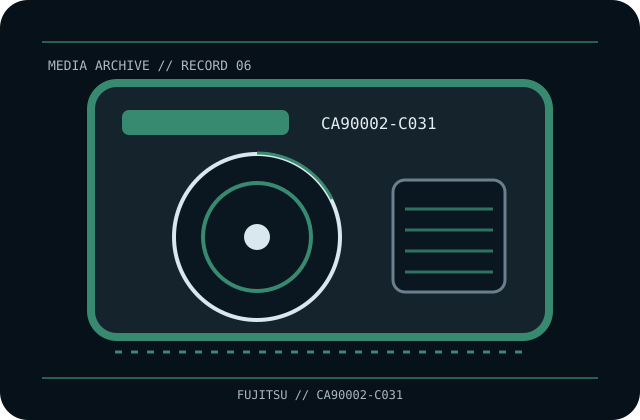

[ REMOVABLE MEDIA // MAGNETO-OPTICAL CARTRIDGE ]
Fujitsu 3.5-inch GigaMO 2.3 GB Magneto-Optical Disk (CA90002-C031)
3.5-inch rewritable GigaMO (2.3 GB) magneto-optical disk in a protective cartridge; exact part number CA90002-C031. This record identifies the media only; drive, host interface, firmware, software and any enclosure are separate.

EXACT SKU: Fujitsu CA90002-C031. The record distinguishes nominal uncompressed capacity from any compressed estimate and documents generation-specific host compatibility.
Format generation, capacity and compatible drives
| Manufacturer / exact SKU | Fujitsu CA90002-C031 |
|---|---|
| Format / generation | 3.5-inch rewritable GigaMO (2.3 GB) magneto-optical disk in a protective cartridge; exact part number CA90002-C031. |
| Native capacity | 2.3 GB nominal native capacity (uncompressed); filesystem and formatting reduce available user space. |
| Compressed capacity | Not applicable as an optical-media rating; any software compression is external and data-dependent. |
| Compatible drive generations | Requires a 3.5-inch 2.3 GB GigaMO-capable magneto-optical drive, such as Fujitsu DynaMO 2300U2 class. A matching shell alone does not establish support; check interface, drive generation, sector format and firmware. Do not assume older 640 MB/1.3 GB mechanisms can read 2.3 GB media. |
| Interface and scope | The cartridge/disc has no direct host-computer interface. The compatible drive supplies its own SAS, Fibre Channel, SCSI, USB or other host connection; check the exact drive specification and driver/software chain. |
| Compatibility caveat | GigaMO 2.3 GB is a distinct 3.5-inch MO density generation, not 1.3 GB or 640 MB MO. Compatibility is drive-generation and sector-format dependent; DICOM compliance or archival claims do not replace tested restoration. |
Optical-cartridge handling and preservation
Keep in its cartridge and away from dust, direct sun, heat, moisture and physical impact. Do not open the sealed media unless the drive documentation explicitly supports cartridge removal; handle the shell rather than the disc shutter. Record the exact drive and operating environment, verify reads/checksums, and migrate to supported equipment before it fails.
- Document the exact printed model, serial/batch or date code, write-protect/WORM status and source of the medium.
- For valuable data, keep at least two independently verified copies, record checksums, test restoration and plan migration before compatible hardware becomes unavailable.
Model-specific preservation and compatibility notes
Preservation note: magneto-optical media depends on a working compatible laser/magnetic-field drive and its format-specific firmware.
GigaMO 2.3 GB is a distinct 3.5-inch MO density generation, not 1.3 GB or 640 MB MO. Compatibility is drive-generation and sector-format dependent; DICOM compliance or archival claims do not replace tested restoration. Never infer interoperability from a similar cartridge shell, connector, brand or family name; confirm drive-generation support in the exact manufacturer's manual.
Manufacturer and archival references
- Fujitsu DynaMO 2300U2 user manual — Internet ArchiveArchived manufacturer manual identifying 2.3 GB GigaMO support and handling.
- MedGrade — Fujitsu CA90002-C031 media recordSKU-specific identification and 2.3 GB rewritable medium details.
- Fujitsu — legacy optical-media support indexManufacturer support/archive landing page for optical drives and media documentation.
Capacity, compatibility and handling are specific to this model and its supported drive generation. For legacy equipment, preserve the manual and test an end-to-end read before relying on the cartridge for migration.